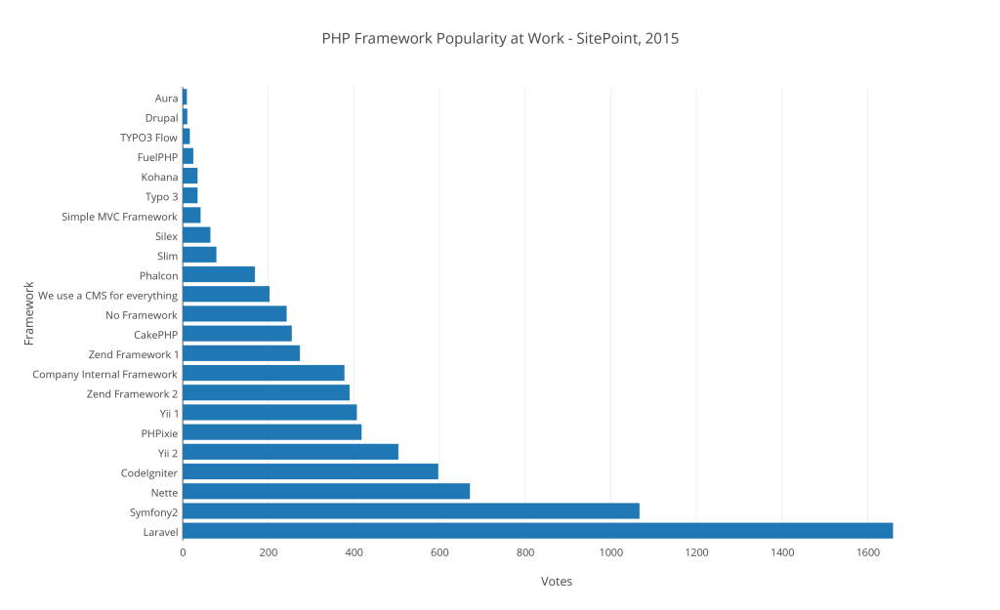

MVC Framework
Laravel
(lvl up?)
© 2017 Tolits Delizo, MIT / @tolitsAhaMoment
What is an MVC Framework?
MVC is a software architectural pattern. It divides data fetching (Model), user interfaces (View) and data and command manipulation (Controller).
Components
- The model is the central component of the pattern. It directly manages the data, logic and rules of the application.
- A view can be any output representation of information. Multiple views of the same information are possible, such as a bar chart for management and a tabular view for accountants.
- The third part, the controller, accepts input and converts it to commands for the model or view.
Interactions
- A model stores data that is retrieved according to commands from the controller and displayed in the view.
- A view generates new output to the user based on changes in the model.
- A controller can send commands to the model to update the model's state (e.g., editing a document). It can also send commands to its associated view to change the view's presentation of the model (e.g., scrolling through a document).

Why choose Laravel?
Why choose Laravel?
Ease of using open source code: uses Composer as a dependency manager to add framework-agnostic and Laravel-specific PHP packages available from the Packagist repository.
Why choose Laravel?
Eloquent ORM
Why choose Laravel?
Query Builder
Why choose Laravel?
Blade Templating Engine
Why choose Laravel?
Migrations
Why choose Laravel?
Database Seeding
Why choose Laravel?
Unit Testing
Why choose Laravel?
Artisan CLI